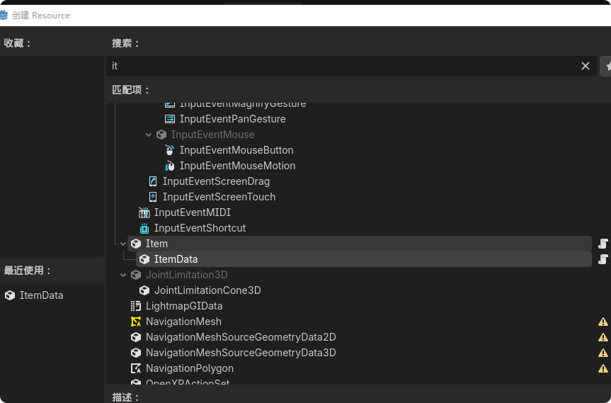
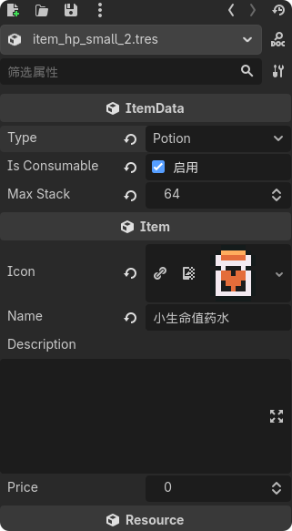
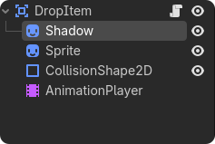
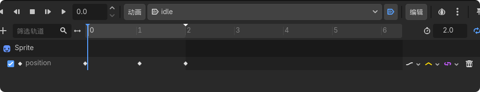
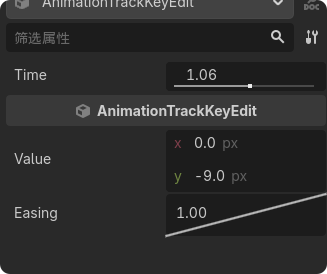
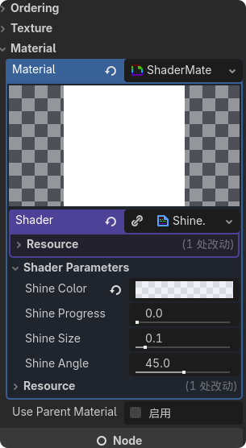
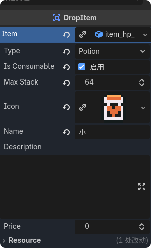
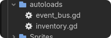
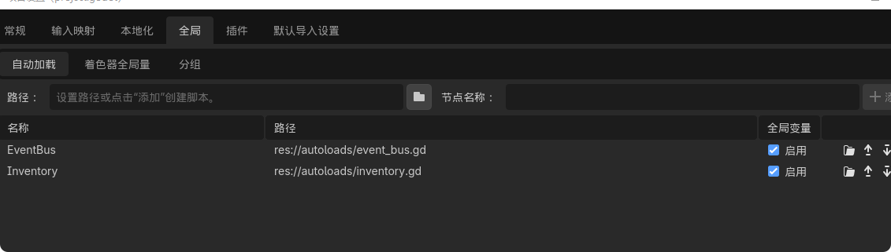
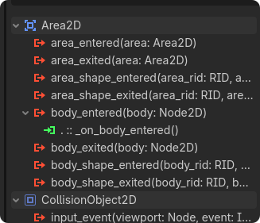

从零开始学习 Godot 4 开发 2D RPG 游戏
创建数据文件夹，然后在文件夹里面创建两个关于物品的脚本，分别命名为 item 和 item_data。
Item 脚本设置为资源类。
extends Resource
class_name Item
@export var icon: Texture2D # 资源图标
@export var name: String # 资源名称
@export_multiline var description: String # 用途
@export var price: int # 价格extends Resource - 继承 Resource 类，使这个脚本可以作为资源文件class_name Item - 定义类名为 Item@export var icon: Texture2D - 导出资源图标属性@export_multiline var description - 导出多行文本属性然后再添加 ItemData 脚本，来为资源添加更多内容。
extends Item
class_name ItemData
enum Type{
FOOD,ORE,POTION,SCROLL,EQUIPMENT # 可以选择的类型
}
@export var type: Type
@export var is_consumable: bool # 是否是消耗品
@export var max_stack: int # 最大堆叠数量extends Item - 继承 Item 类enum Type - 定义物品类型枚举is_consumable - 是否为消耗品（药水、食物等）max_stack - 最大堆叠数量然后创建一个物品。在数据文件夹中添加一个药水文件夹，然后创建一个资源，命名为 item_hp_small_2。


点击就可以进行修改属性了。
在数据文件夹里面新建一个脚本命名为 slot_data。
extends Resource
class_name SlotData
var inventory: Array[SlotData]
@export var item: ItemData
@export var quantity: int = 1
func _init(_item: ItemData, _quantity: int) -> void: # 创建实例时初始化函数
item = _item
quantity = _quantity
# 对于拾取的物品，会显示物品名称和数量class_name SlotData - 定义槽位数据类@export var item: ItemData - 存储物品引用@export var quantity: int - 存储物品数量func _init() - 初始化函数，创建实例时自动调用转到库存槽 InventorySlot 场景里面进行完善。
添加以下节点：
TextureRect - 添加物品图标Label - 用于添加物品数量TextureRect - 用于选择器，当悬停在这个库存槽上时显示extends Button
class_name InventorySlot
signal on_slot_clicked(slot_index: int, button: int) # 信号点击槽位时显示一些信息
signal on_slot_hovered(slot_index: int) # 槽位悬停共享索引
@onready var item_icon: TextureRect = $ItemIcon
@onready var amount_label: Label = $AmountLabel
@onready var texture_rect: TextureRect = $TextureRect
var slot_index: int = -1 # 变量槽索引
var slot_data: SlotData # 数据槽引用
func load_data(data: SlotData) -> void:
slot_data = data
if slot_data and slot_data.item:
item_icon.texture = slot_data.item.icon
item_icon.show()
if slot_data.quantity > 1:
amount_label.text = str(slot_data.quantity)
amount_label.show()
else:
amount_label.hide()
else:
clear_slot()
func clear_slot() -> void:
slot_data = null
item_icon.texture = null
item_icon.hide()
amount_label.hide()signal on_slot_clicked - 点击槽位时发出的信号signal on_slot_hovered - 悬停槽位时发出的信号slot_index - 槽位的索引编号slot_data - 存储的物品数据load_data(data) - 加载数据到槽位clear_slot() - 清空槽位新创建一个掉落物品的场景，为 Area2D 节点，命名为 DropItem。

添加阴影、动画精灵、碰撞。
在 AnimationPlayer 节点中给物品添加一个上下运动的动画。


然后给 Sprite 添加一个闪光着色器。闪光着色器可以去 Godot 的 Shader 网站获取。

然后给掉落物品的区域2D节点添加一个脚本：
extends Area2D
class_name DropItem
@export var item: ItemData # 加载要显示的物品
@export var amount: int = 1
@onready var sprite: Sprite2D = $Sprite
@export var shine_speed: float = 0.6 # 闪耀速度
@export var shine_freq: float = 2.0 # 闪耀频率
func _ready() -> void:
setup()
shine_item()
func setup() -> void: # 判断物品是否存在，仅测试
if item and item.icon:
sprite.texture = item.icon
func load_item(data: SlotData) -> void: # 创建库时使用
item = data.item
amount = data.quantity
func shine_item() -> void:
var shine_tween = create_tween().set_loops()
shine_tween.tween_property(
sprite.material,
"shader_parameter/shine_progress",
1.0,
shine_speed
).set_delay(shine_freq)
shine_tween.tween_property(
sprite.material,
"shader_parameter/shine_progress",
0.0,
0.0
)create_tween().set_loops() - 创建动画并设置无限循环tween_property() - 渐变属性值shader_parameter/shine_progress - 着色器里面闪烁路径set_delay() - 设置延迟时间然后到 Town 场景中实例化掉落物品场景，就能看到之前创建的物品资源了。

先在 autoload 文件夹里面新建一个脚本为库存脚本 Inventory。然后将这个脚本设置为全局变量。


extends Node # 指定当前脚本继承自 Node 节点，使其可以挂载在场景树中运行
signal on_inventory_changed # 定义信号：当背包内容（数量、物品）发生变化时发出，通知 UI 刷新
signal on_equipment_changed # 定义信号：当装备栏（如武器、防具）发生变化时发出（预留功能）
const INVENTORY_SIZE: int = 30 # 定义常量：规定背包的总格子数量为 30 个
var inventory: Array[SlotData] # 定义变量：一个类型受限的数组，专门用来存放 SlotData（槽位数据）对象
func _ready() -> void: # 游戏开始或节点进入场景树时自动调用的初始化函数
inventory.clear() # 清空数组中的所有数据，确保初始状态干净
inventory.resize(INVENTORY_SIZE) # 将数组大小重置为 30，此时数组内填充的都是 null（代表空格子）
func get_empty_slot_indexes() -> Array[int]: # 自定义函数：寻找背包中所有"空位"的索引编号
var empty: Array[int] = [] # 创建一个临时的空整数数组，用来记录找到的索引
for i in inventory.size(): # 开始遍历整个背包（0 到 29）
if inventory[i] == null: # 如果发现该索引对应的位置没有存储任何 SlotData（即为空）
empty.append(i) # 将这个空的索引编号添加到临时数组中
return empty # 返回所有找到的空位索引列表
func find_item_indexes(item: ItemData, with_space: bool = false) -> Array[int]: # 自定义函数：寻找包含特定物品的槽位
var found: Array[int] = [] # 创建一个临时数组，记录匹配物品的槽位索引
for i in inventory.size(): # 遍历整个背包
var slot = inventory[i] # 获取当前索引下的槽位数据
if slot and slot.item == item: # 如果槽位不为空，且槽位里的物品对象等于我们要找的物品
if with_space: # 如果调用时要求"寻找还有剩余空间的槽位"
if slot.quantity < item.max_stack: # 且当前数量还没达到该物品的最大堆叠上限
found.append(i) # 将索引加入列表
else: # 如果不需要考虑空间，只要物品对上就行
found.append(i) # 直接加入列表
return found # 返回符合条件的索引数组extends Node - 继承 Node 类，使其可以挂载在场景树中运行signal on_inventory_changed - 定义信号：当背包内容（数量、物品）发生变化时发出，通知 UI 刷新const INVENTORY_SIZE: int = 30 - 定义常量：规定背包的总格子数量为 30 个var inventory: Array[SlotData] - 定义变量：一个类型受限的数组，专门用来存放 SlotData（槽位数据）对象inventory.resize(INVENTORY_SIZE) - 将数组大小重置为 30，此时数组内填充的都是 null（代表空格子）get_empty_slot_indexes() - 寻找背包中所有"空位"的索引编号find_item_indexes() - 寻找包含特定物品的槽位func add_item(item: ItemData, amount: int = 1) -> void: # 核心函数：向背包添加指定数量的物品
if not item: # 安全检查：如果传入的物品对象是空的（null），则直接跳过不执行
return
var remaining = amount # 定义一个变量记录"还剩下多少没放进背包"，初始值为传入的总量
if item.max_stack > 1: # 如果该物品是可以堆叠的（最大堆叠数大于 1）
for index in find_item_indexes(item, true): # 寻找现有的、还没塞满的同类物品槽位并进行遍历
if remaining <= 0: # 如果剩下的物品已经分配完了，提前结束循环
break
var slot = inventory[index] # 获取该槽位的引用
var space = item.max_stack - slot.quantity # 计算当前格子还能塞进去多少个（上限减去现有量）
var to_give = min(space, remaining) # 取"剩余空间"和"剩余待入库量"中较小的那个数
slot.quantity += to_give # 将数量加到现有槽位中
remaining -= to_give # 从待入库总量中扣除掉刚刚放入的数量
if remaining > 0: # 如果经过上面的合并后还有剩下的，或者物品根本不能堆叠
for index in get_empty_slot_indexes(): # 寻找背包里的纯空位并进行遍历
if remaining <= 0: # 如果物品已经放完了，提前结束循环
break
var to_give = min(item.max_stack, remaining) # 决定这个新格子里放多少（不超过最大堆叠数）
inventory[index] = SlotData.new(item, to_give) # 在这个空位创建一个新的 SlotData 实例并存入物品
remaining -= to_give # 从待入库总量中扣除
var added = amount - remaining # 计算实际放入背包的总数（初始总量减去最后剩下的）
if added > 0: # 只要有任何物品成功放入了背包
on_inventory_changed.emit() # 发出信号，通知其他脚本（如 UI 面板）背包数据已更新
func get_slot(index: int) -> SlotData:
# 定义一个名为 get_slot 的函数。
# 它接收一个整数参数 index（索引），并声明返回值类型为 SlotData。
if index >= 0 and index < inventory.size():
# 这是一个安全性判断（越界检查）。
# 第一部分 index >= 0：确保索引不是负数（数组下标从 0 开始）。
# 第二部分 index < inventory.size()：确保索引没有超过数组的最大长度（30）。
# 只有当索引在这个合法范围内，才会执行下一行。
return inventory[index]
# 如果索引合法，则从 inventory 数组中取出对应位置的数据并返回给调用者。
return null
# 如果索引不合法（例如输入了 -1 或者 100），则跳过上面的 return，
# 最终返回 null，表示"没找到"或"无效位置"，防止程序因为非法访问而崩溃。add_item(item, amount) - 核心函数，向背包添加指定数量的物品remaining - 记录"还剩下多少没放进背包"get_slot(index) - 获取指定索引的槽位数据，带越界检查extends PanelContainer
class_name InventoryPanels
@onready var container: GridContainer = %Container
@onready var gold_label: Label = %GoldLabel
var slots: Array[InventorySlot]
# 定义一个数组，用来存储所有的 UI 格子组件（InventorySlot）
func _ready() -> void: # 当 UI 界面初始化完成时执行
Inventory.on_inventory_changed.connect(_on_inventory_changed)
# 监听逻辑层发出的"背包变化"信号，一旦变化就刷新 UI
for i in container.get_child_count():
# 遍历网格容器中所有的子节点（即场景编辑器里摆好的格子）
var slot: InventorySlot = container.get_child(i)
# 获取第 i 个格子对象
slot.on_slot_clicked.connect(_on_slot_clicked)
# 监听该格子的"被点击"信号
slot.on_slot_hovered.connect(_on_slot_hovered)
# 监听该格子的"被悬停"信号
slot.slot_index = i
# 给这个 UI 格子标记它的索引编号（比如第 0 号格、第 1 号格）
slots.append(slot)
# 将这个格子的引用存入 slots 数组，方便后续统一操作
func _on_inventory_changed() -> void:
# 这是一个回调函数，当背包数据改变时被触发
for i in slots.size():
# 遍历所有的 UI 格子
var slot: SlotData = Inventory.get_slot(i)
# 从逻辑层（Inventory）获取对应索引的物品数据
slots[i].load_data(slot)
# 调用 UI 格子的渲染函数，根据数据更新图片和数量显示
func _on_slot_clicked() -> void:
pass # 目前是空的，你可以在这里写"使用物品"或"丢弃物品"的逻辑
func _on_slot_hovered() -> void:
pass # 目前是空的，你可以在这里写"显示物品详情（提示框）"的逻辑Inventory.on_inventory_changed.connect() - 连接背包变化信号container.get_child_count() - 获取网格容器的子节点数量slots.append(slot) - 将格子引用存入数组_on_inventory_changed() - 背包变化时的回调，刷新所有格子显示给掉落物添加一个信号：

func _on_body_entered(body: Node2D) -> void:
Inventory.add_item(item, amount)
queue_free()_on_body_entered(body) - 当有物体进入区域时调用Inventory.add_item() - 调用 Inventory 的添加物品函数queue_free() - 掉落物从场景中移除